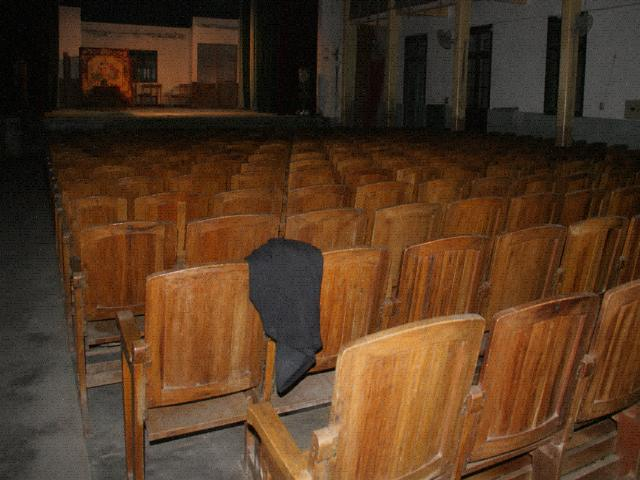

The publicity copy bills Mulian as a filial-piety play. The Crossing Naihe excerpt is short. It can finish inside two hours. Visitors like to photograph the upstage door. The upstage door does not allow photos. The copy does not say so.
NightPlay has to be full. Full is not marketing. It is troupe talk. Tourism wrote atmosphere. Atmosphere sells.
Laolang Temple is west of town. The heritage staffer is QiaoGan. He talks steles, not plays. Play questions go to the troupe. IncenseAccount in the temple sometimes lines up with the Playbill and sometimes does not.
WhitePlay is sold to locals. NightPlay is sold to out-of-towners. Two tickets, two seatings, two books. This page only sells NightPlay.
People who search Mulian land on the troupe Playbill. Playbill margin notes are not on the Tourism site. Margin notes are internal transcripts.
Copy publicity would not use. Old Zhou cut it twice. Still on the USB. Xiao Yan pasted it back under the heritage footer.
Mulian written as a filial-piety play was the change when they filed the county heritage list in 2011. Internally it used to be called a zhezixi. Leadership said those two syllables did not look like something you could hang a plaque on. Crossing Naihe, the troupe times it at forty-eight minutes. Guests shouting bravo can stretch it another eight. Stretch it and lighting wants overtime. Tourism will not recognize overtime. Visitors like to photograph the upstage door. Upstage door does not allow photos. That sentence was in the draft. Old Zhou said too hard. Cut. Cut and people still shoot. Shot and somebody comes out to block. NightPlay needs the company full. Company full is troupe talk. Tourism wrote good atmosphere. Good atmosphere prints on a leaflet. Print company full and people ask full of whom. WhitePlay sells to locals. NightPlay sells to out-of-towners. Two tickets, two seat books, two ledgers. This page only sells NightPlay. Do not bring WhitePlay refund practice here. The Laolang temple is west of town. Heritage clerk QiaoGan talks steles, not plays. Plays, ask the troupe. Temple IncenseAccount sometimes matches the Playbill, sometimes does not. The ones that do not, QiaoGan does not explain. Explanation would not be on this page anyway. County-TV camera Xiao Chen shot a long shot once. Close-up not allowed in. He said close-up had no point. No point and they still aired fifteen seconds. Margin notes are not on the Tourism site. Margin notes are an internal transcript. Want to see them, go to the troupe. The heritage bronze plaque hangs next to the town-gate stone, not on the stage. ChengShi would not allow that. That stone is not the same stele as the one at the Laolang temple. One shichen on the leaflet is forty-eight minutes forced to fit. Forced and they still printed three thousand. One box left, damp, letters bloomed. Bloomed and they still hand them out. Runtime follows the troupe's stopwatch.